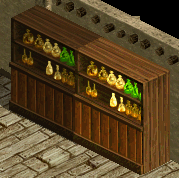
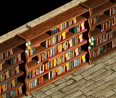

メインクエスト Season1 Chapter1
| Part1 ロングッシュの風聞収集 | 1 2 3 |
| Part2 国会議事堂の依頼 | 1 2 3 |
| Part3 シーフギルドの関心 | 1 2 3 4 5 6 7 |
| Part4 砂漠の傭兵 | 1 2 3 4 |
| Part5 アイノの報告書 | 1 2 3 4 5 6 7 8 9 10 |
| Part6 悪魔の誘惑 | 1 2 3 4 |
| Part7 天使の涙 | 1 2 3 |
| Part8 記憶の破片たち | 1 2 3 4 5 6 7 8 9 |
| Part9 破滅の跡 | 1 2 3 4 5 6 |
| Part10 最後の試験 | 1 |


| Part4 砂漠の傭兵 | |
|---|---|
| 1. グレイツのうわさ集め | |
調査が終わったらアリアン傭兵ギルドにいるグレイツのところに戻って報告しよう。 アリアン傭兵団クロマティガードの隊員募集担当グレイツが、奇妙なうわさについての真相調査を依頼した。うっかり傭兵団所属になってしまい、おかしな状態ではあるが、とにかくアリアン東門の警備兵ドゥムガに会って事情を聞いてみよう。 |
|
| 受諾場所 | アリアン傭兵ギルド グレイツ（19.41） |
| 受諾条件 | Lv42 |
| 報酬 | - |
| アリアン傭兵ギルド | グレイツへ |
| オアシス都市アリアン | ドゥムガ（126.135）へ |
| 2. 奇妙なうわさの真相調査 | |
ドゥムガに聞いたことをグレイツに報告しよう。報告だとしても赤い悪魔が広めたデマであるようだという話が全てだが、それでもグレイツに聞いた内容を報告しよう。 |
|
| 受諾場所 | オアシス都市アリアン ドゥムガ（126.135） |
| 受諾条件 | Lv42 |
| 報酬 | 経験値5000 ①クロマティガード名誉隊員Lv1（敏捷 +3） ②クロマティガード名誉隊員Lv2（敏捷 +6） |
| アリアン傭兵ギルド | グレイツへ ここでの選択によって、4-3と5-10でのクロマティガード名誉隊員Lvが変わる。 ①全般的→Lv1（敏捷 +3）→Lv3（力 +3 敏捷 +3）→Lv5（敏捷 +3 健康 +3 力 +3） ②部分的→Lv2（敏捷 +6）→Lv4（敏捷 +6 健康 +3）→Lv6（敏捷 +6 健康 +6） ①警備兵にうわさを伝える。 → うわさの真実 ②うわさの真相を知るために警備兵墓に移動する。 → あばかれた真実 |
| 3. うわさの真実 | |
|
アリアン内にいる全てのクロマティガード隊員に、街で流れているうわさが赤い悪魔による、たくらみであることを伝えよう。市内のクロマティガード隊員の内10人に内容を伝えなければならない。 任務を果たした。グレイツに会って報告しよう。 |
|
| 受諾場所 | アリアン傭兵ギルド グレイツ（19.41） |
| 受諾条件 | Lv42 |
| 報酬 | 経験値15万 ①クロマティガード名誉隊員Lv3（力 +3 敏捷 +3） ②クロマティガード名誉隊員Lv4（敏捷 +6 健康 +3） |
| オアシス都市アリアン | ①警備兵にうわさを伝える。 を選択した場合 クロマティガード10人へ （32.60）（33.49）（35.62）（35.98）（36.43）（56.85）（79.114）（95.91）（101.85）（101.92）（119.118）（123.118） |
| アリアン傭兵ギルド | グレイツへ 4-2での選択によって、クロマティガード名誉隊員Lvが変わる。 ①全般的 → Lv3（力 +3 敏捷 +3） ②部分的 → Lv4（敏捷 +6 健康 +3） |
| 3. あばかれた真実 | |
奇妙なうわさについて、もう少し詳しく事件の内幕が知りたければ、危険を覚悟しても警備兵墓の一番下層にいるダークリッチペインシーカーに会ってみよう。しかし、とても危ないから危険度が高いことも事実だ。 警備兵墓の最下層で会ったダークリッチペインシーカーがアリアン傭兵団事件の真相について新しい内容を知らせてくれた。これが事実なら、大問題になりかねないから必ず確認しなければならない。グレイツにのもとに戻って事実の真偽、善悪を確認しよう。 |
|
| 受諾場所 | アリアン傭兵ギルド グレイツ（19.41） |
| 受諾条件 | Lv42 |
| 報酬 | 経験値7万5000 1万G ①クロマティガード名誉隊員Lv3（力 +3 敏捷 +3） ②クロマティガード名誉隊員Lv4（敏捷 +6 健康 +3） |
| 警備兵墓 Ｂ２ | ②うわさの真相を知るために警備兵墓に移動する。 を選択した場合 ペインシーカー（5.15）へ |
| アリアン傭兵ギルド | グレイツへ 4-2での選択によって、クロマティガード名誉隊員Lvが変わる。 ①全般的 → Lv3（力 +3 敏捷 +3） ②部分的 → Lv4（敏捷 +6 健康 +3） |
| 4. 筆写家-クリスティラ | |
ハノブの筆写家クリスティラがRED STONEに関する手がかりを握っているという情報を聞いた。50レベル以上になったらクリスティラに会ってアイノの報告書について聞いてみよう。 |
|
| 受諾場所 | アリアン傭兵ギルド グレイツ（19.41） |
| 受諾条件 | Lv42 |
| 報酬 | 経験値3万3000 |
| 鉱山町ハノブ | Lv50以上でクリスティラ（108.108）へ、廃坑 Ｂ５へワープ |
| Part5 アイノの報告書 | |
|---|---|
| 1. 一番目アイノの報告書探索 | |
ハノブの筆写家クリスティラがアイノの報告書探索を頼んだ。今回探索する所はエルベルグ山脈 / ハノブ西部地域の廃坑。廃坑B5を中心にB3・B4・B6のモンスターを狩ろう。 アイノの報告2ページを探し出した。クリスティラの所に戻ろう。 アイノの報告書の探索に行くの準備ができたら鉱山町ハノブにいるクリスティラを訪ねよう。 |
|
| 受諾場所 | 鉱山町ハノブ クリスティラ（108.108） |
| 受諾条件 | Lv50 |
| 報酬 | 経験値11万 |
| 廃坑 Ｂ３～６ | モンスター(Lv80)を倒す |
| 鉱山町ハノブ | クリスティラへ、鉄鉱山 Ｂ５へワープ |
| 2. 二番目アイノの報告書探索 | |
ハノブの筆写家クリスティラがアイノの報告書の紙切れ探索を本格的に開始してくれという依頼をした。今回探索しなければならない場所はハノブの鉄鉱山B5。アイノの報告書の紙切れはモンスターが隠していると言う。アイノの報告書3を探し出したら必ずアイノの報告書(未確認)に保管した後、クリスティラの所に戻ろう。 アイノの報告3ページを探し出した。見つけたアイノの報告書3をアイノの報告書(未確認)に保管した後、クリスティラの所に戻ろう。 |
|
| 受諾場所 | 鉱山町ハノブ クリスティラ（108.108） |
| 受諾条件 | Lv50 |
| 報酬 | 経験値13万5000 |
| 鉄鉱山 Ｂ５ | モンスター(Lv90)を倒す アイノの報告書（未確認）[ページ 3]を右クリック → 使うを選択 → アイノの報告書（未確認）をクリックして保管する。 |
| 鉱山町ハノブ | クリスティラへ |
| 3. 三番目アイノの報告書探索 | |
ハノブの筆写家クリスティラが、ハノブ高台望楼、ハノブ南側望楼、キャンサー気孔B2のモンスターが隠しているアイノの報告書の紙切れを探して来てくれと言う。アイノの報告書の一部を全部探し出したら必ずアイノの報告書(未確認)に保管した後、クリスティラの所に戻ろう。各ダンジョンのモンスターは、下のアイノの報告書の紙切れを隠しているらしい。 ハノブ高台望楼 - アイノの報告書5 ハノブ南側望楼 - アイノの報告書6 キャンサー気孔B2 - アイノの報告書7 アイノの報告書5・6・7ページを探し出した。見つけたアイノの報告書5・6・7ページをアイノの報告書(未確認)に保管した後、クリスティラの所に戻ろう。 |
|
| 受諾場所 | 鉱山町ハノブ クリスティラ（108.108） |
| 受諾条件 | Lv50 |
| 報酬 | 経験値16万 |
| ハノブ高台望楼 １Ｆ | モンスター(Lv42)を倒す |
| ハノブ南側望楼 １Ｆ | モンスター(Lv52)を倒す |
| キャンサー気孔 Ｂ２ | モンスター(Lv70)を倒す |
| 鉱山町ハノブ | クリスティラへ |
| 4. 四番目アイノの報告書探索 | |
ハノブの筆写家クリスティラが、再度アイノの報告書の紙切れ探索を依頼した。今回探索する位置は、ヘムクロス高原の南部地域とヘムクロス高原 / アラク湖付近から行くことができるタワー洞窟地下道１F、タワー洞窟地下道２Fだという。タワー洞窟地下道１Fでは、周辺の花を確認しよう。また、タワー洞窟地下道２Fでは、たいまつをよく探してみよう。ヘムクロス高原の南部地域では、ブラウンベアーを詳しく調査しよう。アイノの報告書9・10・11・12を探し出したら、必ずアイノの報告書(未確認)に保管した後、クリスティラの所に戻ろう。 ヘムクロス高原の南部地域 - アイノの報告書9, 11 - ブラウンベアー退治 タワー洞窟地下道１F - アイノの報告書10 - 周辺の花確認 タワー洞窟地下道２F - アイノの報告書12 - たいまつ確認 アイノの報告書9・10・11・12ページを探し出した。見つけたアイノの報告書9・10・11・12はアイノの報告書(未確認)に保管した後、クリスティラの所に戻ろう。 |
|
| 受諾場所 | 鉱山町ハノブ クリスティラ（108.108） |
| 受諾条件 | Lv50 |
| 報酬 | 経験値9万 |
| ヘムクロス高原 / 高原南部地域 | ブラウンベアー(Lv60)を倒す |
| タワー洞窟地下道 １Ｆ | 花（57.14）をクリック、 ワープした先の花をクリックして入手。  |
| タワー洞窟地下道 ２Ｆ | たいまつ（29.9）（61.15）をクリック、 ワープした先の魔方陣（91.38）をまたクリック  |
| 鉱山町ハノブ | クリスティラへ、廃坑 Ｂ７へワープ |
| 5. 五番目アイノの報告書探索 | |
アイノの報告書はどれくらい長いものか分からないけれど、未だに探索をしているのか？ハノブの筆写家クリスティラが今度は廃坑B7～B10とスウェブタワー1F～10Fの間での探索を依頼した。廃坑ではモンスターがアイノの報告書の一部を持っており、スウェブタワーではタワーに隠れている古の仙人が持っている。彼らは道の周辺にいるので、モンスターと戦う必要はない。アイノの報告書14・15・16・17を探し出したら必ずアイノの報告書(未確認)に保管した後、クリスティラの所に戻ろう。 アイノの報告書14・15・16・17ページを探し出した。アイノの報告書(未確認)に保管した後、クリスティラの所に戻ろう。 |
|
| 受諾場所 | 鉱山町ハノブ クリスティラ（108.108） |
| 受諾条件 | Lv50 |
| 報酬 | 経験値15万 |
| 廃坑 Ｂ７～１０ | モンスター(Lv130)を倒す |
| スウェブタワー ３Ｆ | ベルガ（42.67）へ |
| スウェブタワー ５Ｆ | ドルムガ（70.85）へ |
| スウェブタワー ７Ｆ | ドスル（59.73）へ |
| 鉱山町ハノブ | クリスティラへ、キャンサー気孔 Ｂ７へワープ |
| 6. 六番目アイノの報告書探索 | |
アイノの報告書も終わりに近づいてきたようだ。探索する場所は、次の通り。キャンサー気孔B7とアルパス地下監獄B3では、すべてのモンスターを調査しよう。旧レッドアイ研究所B3ではイフリィトを、オート地下監獄B3ではデスピンサーを捜索する。アイノの報告書の紙切れをすべて探し出したら必ずアイノの報告書(未確認)に保管した後、クリスティラの所に戻ろう。探さなければならない報告書は19・20・21・22番目の報告書の紙切れだ。 キャンサー気孔B7 - すべてのモンスター退治 アルパス地下監獄B3 - すべてのモンスター退治 旧レッドアイ研究所B3 - イフリィト退治 オート地下監獄B3 - デスピンサー退治 アイノの報告書19・20・21・22ページを探し出した。見つけたアイノの報告書はアイノの報告書(未確認)に保管した後、クリスティラの所に戻ろう。 |
|
| 受諾場所 | 鉱山町ハノブ クリスティラ（108.108） |
| 受諾条件 | Lv50 |
| 報酬 | 経験値28万 |
| キャンサー気孔 Ｂ７ | モンスター(Lv130)を倒す |
| アルパス地下監獄 Ｂ３ | モンスター(Lv100)を倒す |
| 旧レッドアイ研究所 Ｂ３ | イフリィト(Lv65)を倒す、イフリィト祭壇に1匹 |
| オート地下監獄 Ｂ３ | デスピンサー(Lv52)を倒す |
| 鉱山町ハノブ | クリスティラへ、スウェブタワー １７Ｆへワープ |
| 7. 七番目アイノの報告書探索 | |
いよいよ最後の報告書の探索だ。スウェブタワーの最上層に向かおう。17F, 18F, 19Fをよく調査したら良いみたいだ。今回も、いにしえの仙人に会おう。いにしえの仙人は道の周辺にいるので、モンスターと戦う必要はない。アイノの報告書を探し出したら必ずアイノの報告書(未確認)に保管した後、クリスティラの所に戻ろう。探さなければならない報告書は全部で3つだ。 アイノの報告書 24・25・26 ページを探し出した。見つけたアイノの報告書は、アイノの報告書(未確認)に保管した後、クリスティラの所に戻ろう。 ビッグアイに住んでいるポテムスンを訪ねてクリスティラの推薦状を見せてあげよう。参考に、完成されたアイノの報告書はケブティスとブローム、グレイツの内１人にだけ渡すことができる。誰に渡すかはあなたの選択だ。（選択する人によって報酬が変わるので、よく考えよう。） |
|
| 受諾場所 | 鉱山町ハノブ クリスティラ（108.108） |
| 受諾条件 | Lv50 |
| 報酬 | 経験値1万 |
| スウェブタワー １７Ｆ | アレックス（61.80）へ |
| スウェブタワー １８Ｆ | ベイグノ（71.77）へ |
| スウェブタワー １９Ｆ | スロムトグバイル（68.51）へ |
| 鉱山町ハノブ | クリスティラへ |
| 小都市ビッグアイ | ポテムスン（51.76）へ アイノの報告書はケブティス、ブローム、メカジャの誰か1人に渡す。 渡さないで持っていた場合、2-7-3のグレイツ以降進行できなくなる。 |
| 8. ブリッジヘッド・シーフギルドとの取り引き | |
ブリッジヘッドのギルドマスターケブティスがアイノの報告書を欲しがっている。もう内容は分かっているので必要なければケブティスにあげよう。報告書は1つだけだ。慎重でも果敢に決めた方が良いだろう。 |
|
| 受諾場所 | 港街ブリッジヘッド ケブティス（8.16） |
| 受諾条件 | Lv55 |
| 報酬 | 経験値10万 特A洞窟シーフLv2（敏捷 +2） ランダムオプション職業鎧（最高補正） |
| 港街ブリッジヘッド | アイノの報告書をケブティスに渡した場合。 3-9-2で特A洞窟シーフLvがさらに上がる。 特A洞窟シーフLv1（敏捷 +1）→Lv2（+2）→Lv3（+4） |
| 9. ブルンネンシュティグ議会との取り引き | |
ブルンネンシュティグの国会議事堂の中にいる国会議員ブロームにアイノの報告書を持っていけば、良いことがあるようだ。あげるのは自分の意思だが報告書は１つだけなのでよく考えよう。 |
|
| 受諾場所 | 国会議員ブロームの事務室 ブローム（13.13） |
| 受諾条件 | Lv55 |
| 報酬 | 経験値7万5000 2万G ゴドム共和国名誉議員Lv2（カリスマ +4） |
| 国会議員ブロームの事務室 | アイノの報告書をブロームに渡した場合。 4-3-2でゴドム共和国名誉議員Lvがさらに上がる。 ゴドム共和国名誉議員Lv1（カリスマ +2）→Lv2（+4）→Lv3（+7） |
| 10. クロマティガードとの取り引き | |
アリアン・クロマティガード新兵訓練担当将校であるメカジャがアイノの報告書を欲しがっているようだ。１つだけの報告書だし、再び手に入れるのは夢のまた夢なので、よく考えて決めよう。 |
|
| 受諾場所 | オアシス都市アリアン メカジャ（53.85） |
| 受諾条件 | Lv55 |
| 報酬 | 経験値10万 ①クロマティガード名誉隊員Lv5（敏捷 +3 健康 +3 力 +3） ②クロマティガード名誉隊員Lv6（敏捷 +6 健康 +6） |
| オアシス都市アリアン | アイノの報告書をメカジャに渡した場合。 4-2での選択によって、クロマティガード名誉隊員Lvが変わる。 ①全般的 → Lv5（敏捷 +3 健康 +3 力 +3） ②部分的 → Lv6（敏捷 +6 健康 +6） |
| Part6 悪魔の誘惑 | |
|---|---|
| 1. 酔っ払いポテムスン | |
ビッグアイのポテムスンが、火酒倉庫に行って警備兵ミナイに頼んで、火酒をもらって来なさいと言った。火酒倉庫には60レベル以上の人だけ入場できるようだから、一応60レベル以上になった後、ミナイを訪ねよう。 |
|
| 受諾場所 | 小都市ビッグアイ ポテムスン（53.73） |
| 受諾条件 | Lv50 |
| 報酬 | 経験値1万 |
| 小都市ビッグアイ | Lv60以上でミナイ（60.18）へ |
| 2. 失くしてしまった鍵 | |
ビッグアイの警備兵ミナイが鍵を失くしてしまって大変な状況である。鍵を探してあげれば火酒倉庫に行く門をすぐに開いてくれるみたいだから鍵を探してみよう。鍵を失くしてしまったという場所はビッグアイの北にあるウェテンロード / ケルチ大橋付近だと言う。そこのモンスターを調査してみよう。 鍵を探した。ミナイのもとに戻ろう。 |
|
| 受諾場所 | 小都市ビッグアイ ミナイ（60.18） |
| 受諾条件 | Lv60 |
| 報酬 | 経験値5万 |
| ウェテンロード / ケルチ大橋付近 | モンスター（Lv60)を倒す |
| 小都市ビッグアイ | ミナイへ、火酒倉庫へワープ |
| 3. 未知の赤い悪魔 | |
絶対死んではいけない。死んでしまった場合、ビッグアイから再スタートする。ここを通って、また未知の赤い悪魔に会って火酒12本をゲットしよう！ 無事に出口を探して通り抜けた。未知の赤い悪魔にまた会ったら火酒12本をゲットしよう。 火酒倉庫を探索しよう。 火酒をすべて手に入れた。ミナイのところに戻ろう。 |
|
| 受諾場所 | 火酒倉庫 未知の赤い悪魔（75.70） |
| 受諾条件 | Lv60 |
| 報酬 | ① 5000G ② - |
| 火酒倉庫 | フィールド属性低下 全属性-100％、マップ製作者Lv1でミニマップ表示可能。 未知の赤い悪魔へ、ワープ。 ピエンド（Lv50）、赤い悪魔追従者（Lv50）、ファイアブロアー（Lv50）を10匹倒す。 クリスタル（116.113）をクリックしてワープ。 ニックス（Lv55)、飛海月（Lv55)、凍破（Lv55)を10匹倒す。 クリスタル（29.111）をクリックしてワープ。 リプリートマーキ（Lv60)を10匹倒す。 クリスタル（30.25）をクリックしてワープ。 グリムジョーカー（Lv65)を15匹倒す、自動的にワープ。 マーブルガゴイル（Lv70）を15匹倒す、自動的にワープ。 ロックゴーレム（Lv75）を15匹倒す、自動的にワープ。 インプ（Lv50）を1匹倒す、自動的にワープ。 鷲剣士（Lv52）を1匹倒す、自動的にワープ。 ナーガファイター（Lv54）を1匹倒す、自動的にワープ。 未知の赤い悪魔へ、小都市ビッグアイへワープ。 追放天使とパーティーを組んでコーリングしてもらう場合、最後のナーガファイターのみ各自で倒せばクリアできる。 |
| 小都市ビッグアイ | ミナイ（60.18）へ ①火酒2本をあげる。 → 5000G ②そのまま行く。 → なし |
| 4. 酒の肴フィッシュエッグ | |
ビッグアイの酔っ払いであるポテムスンの代理で、酒の肴を求めにシュトラセラトに行ってフィッシュエッグという特産品をもらってこよう。フィッシュエッグはシュトラセラトにある居酒屋ブルースビストロの主人パルメが売っている。 ポテムスンの信用問題のせいで、フィッシュエッグをもらうのに問題が起きた。この信用問題を解決するためには再びポテムスンに会って相談をするか、自分で解決しよう。 不足だがポテムスンにお金をもらった。このお金を持ってなんとしてもフィッシュエッグをもらってこよう。 フィッシュエッグを持ってビッグアイのポテムスンの所に戻ろう。 火酒を持ってビッグアイのポテムスンに会いに行こう。 |
|
| 受諾場所 | 小都市ビッグアイ ミナイ（60.18） |
| 受諾条件 | Lv60 |
| 報酬 | ①- 4000 + 1万G ②+ 2000 - 5250 + 1万G |
| 小都市ビッグアイ | ポテムスン（53.73）へ |
| ブルースビストロ | パルメ（19.5）へ ①私が代わりに支払います → 4000G払う ②行って伝えます → ポテムスンから2000Gもらい、5250G払う |
| 小都市ビッグアイ | ポテムスンへ |
| Part7 天使の涙 | |
|---|---|
| 1. 証明 | |
ポテムスンからもらった推薦状を持ってロマ村 ビスルにいるクーンに会おう。ロマ村 ビスルは、ソゴム山脈 赤山登山路の上にある。 イフリィトのリーダーであるスルタンに会おう。スルタンに会うまでの間に、絶対にイフリィト達を殺してはいけない。しかし、どうしようもない場合ならば、戦ったとしてもその原因を見つけ出そう。 イフリィト達を殺してしまった為、スルタンと会話することが難しくなった。自分でイフリィト達が乱暴になった理由を探し出さなければならない。理由を探し出すために、死んだイフリィト達の身体を調べてみよう。 イフリィトの身から悪魔の足指の爪を見つけた。これをロマ村 ビスルのクーンに見せてあげよう。 イフリィト達がどうして乱暴になったのか理由が分かった。この事実をロマ村 ビスルのクーンに伝えよう。 |
|
| 受諾場所 | 小都市ビッグアイ ポテムスン（53.73） |
| 受諾条件 | Lv60 |
| 報酬 | 経験値17万 5000G （イフリィトを倒してしまった場合 経験値1万5000） |
| ロマ村 ビスル | クーン（37.40）へ |
| ソゴム山脈 赤山登山路 | スルタン（126.77）へ スルタンに話す前にイフリィト（Lv117）を倒してしまうと、別のクエストが発生。 イフリィト（Lv117）をさらに倒して悪魔の足指の爪を入手する。 スルタンには行かず、クーンへ |
| ロマ村 ビスル | クーンへ、天上界入口へワープ |
| 2. 天使の涙 | |
イフリィトにかかった呪いの呪文を解かなければならない。呪いを解くためには天上界のハルダエルに会わなければならない。 天使の涙を作る材料を求めよう。尖った形のクリスタル瓶は魔法都市スマグのピムプルストンから、バリアートでは悪魔の胡椒を農民セムスンを通じて手に入れることができる。クリスタル瓶を先に手に入れよう。 尖った形のクリスタル瓶を手に入れた。この後はバリアートに移動して、悪魔の胡椒を農民セムスンを通じて手に入れよう。 すべての材料を手に入れた。これから天上界に戻ってハルダエルに会おう。天上界に行くためにはロマ村 ビスルのクーンに会わなければならない。 ロマ村 ビスルのクーンの所に戻ろう。 |
|
| 受諾場所 | ロマ村 ビスル クーン（37.40） |
| 受諾条件 | Lv60 |
| 報酬 | 経験値12万2000 （イフリィトを倒してしまった場合 経験値1万5000） |
| 天上界入口 | マップ製作者Lv5でミニマップ表示可能 ハルダエル（31.18）へ、スマグアクセサリー店へワープ |
| スマグアクセサリー店 | ピムプルストン（24.5）へ、1000G払う |
| 大きな町 バリアート | セムスン（89.141）へ |
| ロマ村 ビスル | クーンへ、天上界入口へワープ |
| 天上界入口 | ハルダエルへ、ロマ村 ビスルへワープ |
| ロマ村 ビスル | クーンへ |
| 3. 呪いの浄化 | |
天上界門衛長であるハルダエルからもらった天使の涙をイフリィトのリーダーであるスルタンに渡そう。 イフリィト達と仲が良くない。手に入れてきた天使の涙をロマ村 ビスルのクーンに渡そう。 天使の涙をスルタンに渡した。ロマ村 ビスルのクーンの所に戻ろう。 |
|
| 受諾場所 | ロマ村 ビスル クーン（37.40） |
| 受諾条件 | Lv60 |
| 報酬 | 経験値2万5000 5000G |
| ソゴム山脈 赤山登山路 | 7-1でイフリィトを倒してしまった場合、このクエストは発生しない。 スルタン（126.77）へ |
| ロマ村 ビスル | クーンへ |
| Part8 記憶の破片たち | |
|---|---|
| 1. クーンのまがい物 | |
ロマ村 ビスルの村長クーンからもらったにせ物レッドストーンで古狸の国会議員ブロームをだまそう。 |
|
| 受諾場所 | ロマ村 ビスル クーン（37.40） |
| 受諾条件 | Lv65 |
| 報酬 | 経験値9万5000 |
| 国会議員ブロームの事務室 | ブローム（13.13）へ |
| 2. 宝石鑑定士-ゼイン | |
ブロームをだますのに成功した。また、にせ物レッドストーンを持ってガディウス大砂漠 / グレートフォレスト北部地域の廃墟地帯にいるゼインに会おう。ブロームをだましたように、ゼインもだまして彼女が知っているRED STONEに関する情報を取ろう。 |
|
| 受諾場所 | 国会議員ブロームの事務室 ブローム（13.13） |
| 受諾条件 | Lv65 |
| 報酬 | 経験値6万3000 |
| ガディウス大砂漠 / グレートフォレスト北部地域 | ゼイン（157.131）へ |
| 3. ゼインの頼み | |
ガディウス大砂漠 /グレートフォレスト北部に生息するポイズンテールから手に入れることができるポイズンテールの毒を10個手に入れてゼインに渡そう。 ポイズンテールの毒 10個を手に入れた。ゼインに渡そう。 |
|
| 受諾場所 | ガディウス大砂漠 / グレートフォレスト北部地域 ゼイン（157.131） |
| 受諾条件 | Lv65 |
| 報酬 | 経験値12万 |
| ガディウス大砂漠 / グレートフォレスト北部地域 | ポイズンテール（Lv100）を倒す ゼインへ |
| 4. 変わり者魔法師-ゲデワン | |
ゼインからもらった古文書Ⅰを持って魔法都市スマグに暮らすゲデワンに会おう。参考までにゲデワンはキャンディーが大好物だ。 |
|
| 受諾場所 | ガディウス大砂漠 / グレートフォレスト北部地域 ゼイン（157.131） |
| 受諾条件 | Lv65 |
| 報酬 | 経験値22万4000 |
| ウィザードの研究室 | ゲデワン（55.83）にキャンディー1個を渡す。 キャンディーは古都ブルンネンシュティグのバリカス（47.57）から200G/1個、またはギルドホールの雑貨商人から2000G/10個で購入できる。 キャンディーSPや子供キャンディーは不可。 |
| 4-1. 幸運 | |
プロドからもらったパリピースエヴァースをゲデワンに渡そう。 |
|
| 受諾場所 | ガディウス大砂漠 / モリネルタワー付近 プロド（2.13） |
| 受諾条件 | Lv65 |
| 報酬 | - |
| ガディウス大砂漠 / モリネルタワー付近 | プロドに1万G払うとパリピースエヴァース（貸与品）をもらえるが、これは偽物。 偽物ではクエストを遂行できず、偽物を持っていると本物を入手できないので注意。 |
| 5. 古文書の解釈 | |
魔法の塔モリネルタワー5Fでパリピースエヴァース(古代魔法書)を手に入れてゲデワンに渡そう。パリピースエヴァースは魔法の塔モリネルタワー5Fの書棚をよく探してみれば探すことができる。もしも、モリネルタワーにいる恐ろしいモンスターに出会ったら、その道は間違いなので、戦わずに他の道を探そう。 パリピースエヴァース(古代魔法書)を手に入れてゲデワンに渡そう。 |
|
| 受諾場所 | ウィザードの研究室 ゲデワン（55.83） |
| 受諾条件 | Lv65 |
| 報酬 | 経験値20万1000 |
| モリネルタワー 地上５階 |
協会のミラーテレポーターより1 1 1 6 1でモリネルタワー４階に飛び、そこから移動するのが安全。 本棚（30.67）をクリック  魔方陣（35.74）をクリックすると外へワープ 
[備考]走る場合… ガディウス大砂漠 / モリネルタワー付近は見えないワープが多数あるので、ロード画面中から左クリックを押したまま進む。 モリネルタワーは開いている扉、モンスターのいない通路を進む。 |
| ウィザードの研究室 | ゲデワンへ |
| 6. 古文書の正体 | |
ゲデワンは古文書の内容を知るためにはオアシス都市アリアンに暮すジュディアに会ってみてほしいと言う。オアシス都市アリアンに移動して ジュディアに会ってみよう。 ジュディアの依頼で、リンケンの下方の荒廃した町で眠るゲールの墓地に手紙をおいてこよう。ゲールの墓に行くためには、ダメルの酒場(オールドパブ)の中にいる墓守のガイルに会おう。彼がゲールの墓に案内してくれるでしょう。 |
|
| 受諾場所 | ウィザードの研究室 ゲデワン（55.83） |
| 受諾条件 | Lv65 |
| 報酬 | 1万G + 経験値9万7000 1000G |
| オアシス都市アリアン | ジュディア（111.16）へ |
| オールドパブ | ガイル（12.9）へ、ゲールの墓へワープ |
| 荒廃都市ダメル | ガイル（64.14）へ 墓（61.17）をクリックすると外へワープ  |
| 7. ゲールとジュディアの事情 | |
ガディウス大砂漠 / デフヒルズ北部地域のモンスター ゴブリン50匹を狩ろう。 任務を果たした。戻って報告しよう。 |
|
| 受諾場所 | 荒廃都市ダメル ガイル（64.14） |
| 受諾条件 | Lv65 |
| 報酬 | 経験値3万8000 |
| ガディウス大砂漠 / デフヒルズ北側 | ゴブリン（Lv64）を50匹倒す |
| オールドパブ | ガイル（12.9）へ、ゲールの墓へワープ |
| 荒廃都市ダメル | ガイル（64.14）へ |
| 8. 愛の芽生え | |
墓守のガイルからもらった品物をオアシス都市アリアンにいるジュディアに渡そう。 |
|
| 受諾場所 | 荒廃都市ダメル ガイル（64.14） |
| 受諾条件 | Lv65 |
| 報酬 | 経験値2万8000 1万G ジュディアのネックレス |
| オアシス都市アリアン | ジュディア（111.16）へ ジュディアのネックレスは破壊/取引/銀行保管/売買不可。装備のみ可能。 Chapter2終了まで残る。 魔力抽出を使ってオプションを付与→失敗することで破壊可能。(※破壊してもMQは続行可能) MQ終了後も残ってしまってる場合は連絡帳より消去対応可能。  |
| 9. 愛の確認 | |
ジュディアからもらったジュディアのネックレスを墓守のガイルに渡そう。ガイルに会いに行くためにはダメルの酒場(オールドパブ)に行かなければならない。 |
|
| 受諾場所 | オアシス都市アリアン ジュディア（111.16） |
| 受諾条件 | Lv65 |
| 報酬 | 経験値2万8000 |
| オールドパブ | ガイル（12.9）へ、ゲールの墓へワープ |
| 荒廃都市ダメル | ガイル（64.14）へ |
| Part9 破滅の跡 | |
|---|---|
| 1. ゲールの散歩 | |
ガディウス大砂漠 / デフヒルズ北部にいるゲールに会おう。 荒廃都市ダメルにあるゲールの家に行こう。ゲールの家はオールドパブ酒場の棚を通じて入ることができる。 |
|
| 受諾場所 | 荒廃都市ダメル ガイル（64.14） |
| 受諾条件 | Lv70 |
| 報酬 | 経験値2万 |
| ガディウス大砂漠 / デフヒルズ北側 | ゲール（95.148）へ |
| オールドパブ | 棚（12.5）をクリック、ゲールの家へワープ  |
| ゲールの家 | ゲール（11.10）へ 本棚（3.6）をクリックすると外へワープ  |
| 2. ダメルの歴史書 第1巻 | |
オアシス都市アリアンのアリアン遺跡地B1にあるダメルの歴史書 第1巻を持って来よう。遺跡の上方をよく探索すればすぐに探し出すことができるようだ。球体模様の建物が見えたら、その建物を探索してみよう。 ダメルの歴史書 第1巻を探し出した。ゲールの元へ戻ろう。 |
|
| 受諾場所 | ゲールの家 ゲール（11.10） |
| 受諾条件 | Lv70 |
| 報酬 | 経験値3万1000 |
| アリアン遺跡 Ｂ１ | 球体（149.11）をクリック |
| オールドパブ | 棚（12.5）をクリック、ゲールの家へワープ |
| ゲールの家 | ゲール（11.10）へ |
| 3. ダメルの歴史書 第2巻 | |
東プラトン街道 / イースタンブリッジ付近にあるアルパス地下監獄B1のミイラを狩ろう。ダメルの歴史書 第2巻はミイラが隠している。 ダメルの歴史書 第2巻を探し出した。ゲールの元へ戻ろう。 |
|
| 受諾場所 | ゲールの家 ゲール（11.10） |
| 受諾条件 | Lv70 |
| 報酬 | 経験値27万4000 |
| アルパス地下監獄 Ｂ１ | ミイラ（Lv70）を倒す |
| オールドパブ | 棚（12.5）をクリック、ゲールの家へワープ |
| ゲールの家 | ゲール（11.10）へ |
| 4. ダメルの歴史書 第3巻 | |
東プラトン街道 / イースタンブリッジ付近にあるアルパス地下監獄B2のリプリートマーキを狩ろう。ダメルの歴史書 第3巻はリプリートマーキの骨の中に封印されている。 ダメルの歴史書 第3巻を探し出した。ゲールの元へ戻ろう。 |
|
| 受諾場所 | ゲールの家 ゲール（11.10） |
| 受諾条件 | Lv70 |
| 報酬 | 経験値34万2000 |
| アルパス地下監獄 Ｂ２ | リプリートマーキ（Lv80）を倒す |
| オールドパブ | 棚（12.5）をクリック、ゲールの家へワープ |
| ゲールの家 | ゲール（11.10）へ |
| 5. ダメルの歴史書 第4巻 | |
東プラトン街道 / イースタンブリッジ付近にあるアルパス地下監獄B2のジャイアントを狩ろう。ダメルの歴史書 第4巻はジャイアントの身体の中に封印されている。歴史書を持ってきてゲールに渡そう。 ダメルの歴史書 第4巻を探し出した。ゲールの元へ戻ろう。 |
|
| 受諾場所 | ゲールの家 ゲール（11.10） |
| 受諾条件 | Lv75 |
| 報酬 | 経験値29万5000 |
| アルパス地下監獄 Ｂ２ | ジャイアント（Lv75）を倒す |
| オールドパブ | 棚（12.5）をクリック、ゲールの家へワープ |
| ゲールの家 | ゲール（11.10）へ |
| 6. ダメルの歴史書 第5巻 | |
レベルを80に上げた後、エルベルグ山脈 / ハノブ西部地域の廃坑B7にいるブラックメイジが持っているダメル歴史書を持ってきてゲールに渡そう。 ダメルの歴史書 第5巻を探し出した。ゲールの元へ戻ろう。 |
|
| 受諾場所 | ゲールの家 ゲール（11.10） |
| 受諾条件 | Lv75 |
| 報酬 | 経験値49万 ヒールポーション10個 |
| 廃坑 Ｂ７ | Lv80以上でブラックメイジ（Lv75）を倒す |
| オールドパブ | 棚（12.5）をクリック、ゲールの家へワープ |
| ゲールの家 | ゲール（11.10）へ |
| Part10 最後の試験 | |
|---|---|
| 1. RED STONEハンター | |
|
荒廃都市ダメル遺跡地下の秘密ダンジョンにロシペルが隠れていると言う。ロシペルに会うためには仲間と一緒にパーティーを組んだ後、秘密ダンジョンに入ることができる鍵を手に入れなければならない。鍵はダメル遺跡の地下にいるモンスターを倒して手に入れることができる。秘密ダンジョン入口は地下遺跡の一番端にある。よく探してみよう。 赤い悪魔であるロシペルに会った。とうとう最後の勝負だ。全力をつくして戦って勝利しよう。 ロシペルを倒した。この部屋の中央にいるゲールに話しかけてみよう。 |
|
| 受諾場所 | ゲールの家 ゲール（11.10） |
| 受諾条件 | Lv80 |
| 報酬 | 経験値172万3000 RED STONEハンターLv1 |
| ダメル地下遺跡 | 秘密ダンジョン ロシペルの隠れ家 |
| ロシペルの隠れ家 | ゲールへ |
[参考] Yotsuba Quest DataBase